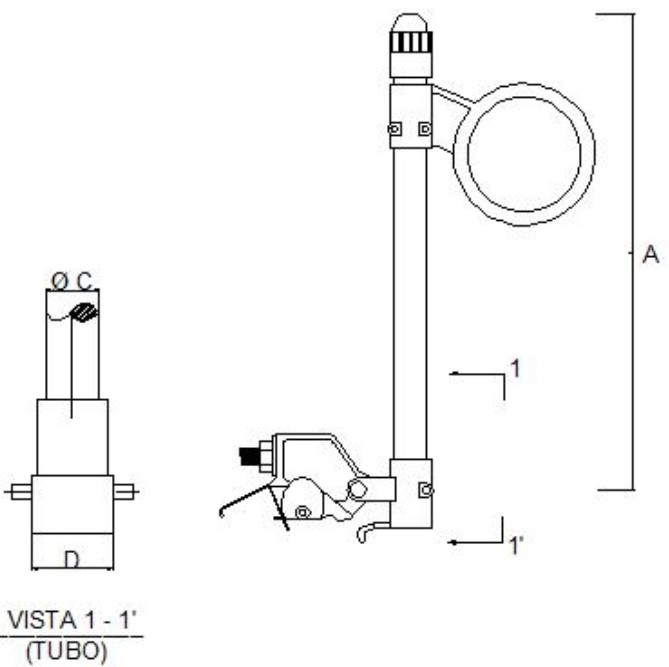
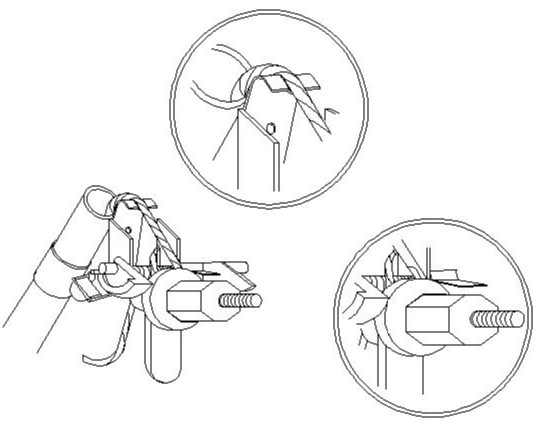
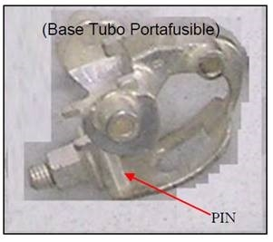

Siempre es más fácil conocer las normas ENEL-CODENSA
Rolex Rolex gold watch, compared with ordinary materials, gold watches are often expensive, but the replica rolex gold watch has the role of swiss replica watches hedging, so that it often becomes the first choice for collectors. The gold watch has value in the world, largely because the omega replica watch brand launched a commemorative limited edition watch or a replica hublot complex movement process or artistic attainments deep watches, mostly preferred gold precious metals such material. These watches tend to have a strong hedging function, therefore, Rolex Rolex gold watch reputation.

ET518 - Tubo Porta Fusible 15 kV, 100A
Datos adicionales
Número de especificación
ET518
Fecha de vigencia
26/01/2022
Herramientas adicionales
- Contenido Ocultar
- 1. Objetivo.
- 2. Alcance.
- 3. Sistema de Unidades.
- 4. Normas de Fabricación y Pruebas.
- 5. Condiciones de servicio.
- 6. Requisitos técnicos.
- 6.1. Requisitos Eléctricos.
- 6.2. Requisitos Mecánicos.
- 6.3 Requisitos de las partes.
- 6.4 Otros Requisitos.
- 7. Marcación.
- 8. Pruebas.
- 8.1 Pruebas tipo
- 8.2 Pruebas de recepción.
- 9. Embalaje.
- 10. Documentación y muestra a suministrar por el oferente.
- 11. Garantía y servicio de post venta.
- 12. Tabla de Características Técnicas Garantizadas.
1. Objetivo.
Esta especificación técnica define los requisitos técnicos y pruebas que deben cumplir los tubos porta fusibles para instalar en Desconectador fusible monofásico bajo las especificaciones técnicas E-MT-001 y GSCM012.Nota: los terminos "Fuse Carrier" o "Fuse Tube", equivalen a Tubo Porta Fusible.
2. Alcance.
Esta especificación técnica se aplica a todos los tubos porta fusibles, que adquiera la Compañía.3. Sistema de Unidades.
En todos los documentos técnicos se deben expresar las cantidades numéricas en unidades del sistema Internacional (S.I.). Si se usan catálogos, folletos o planos, en sistemas diferentes de unidades, deben hacerse las conversiones respectivas.4. Normas de Fabricación y Pruebas.
IEC 60282-2 High-voltage fuses – Part 2: Expulsion fuses.IEC 60282-4 High-voltage fuses – Part 4: Additional testing requirements for high-voltage expulsion fuses utilizing polymeric insulators.
IEEE C37.42. IEEE Standard Specifications For High-Voltage (>1000 V) Fuses And Accessories.
NTC 2133 ESPECIFICACIONES PARA FUSIBLES TIPO EXPULSION DE ALTA TENSION PARA DISTRIBUCION, CORTACIRCUITOS, SECCIONADORES DE FUSIBLE E HILOS FUSIBLES.
Basada en la norma IEEE C37.42.
Las normas citadas en la presente especificación (o cualquier otra que llegaré a ser aceptada por CODENSA S.A.) se refieren a su última versión, incluyendo adendas o revisiones.
5. Condiciones de servicio.
Los tubos porta fusibles, serán utilizados a la intemperie.Los parámetros ambientales de operación son los siguientes:
- Altura sobre el nivel del mar: 2 700 m
- Temperatura ambiente máxima: 40 °C
- Temperatura ambiente mínima: -5 °C
Los parámetros eléctricos de operación son los siguientes:
- Uso: Redes de Distribución.
- Tensión nominal: 11.4 kV, 13.2 kV, 34.5 kV
- Frecuencia: 60 Hz.
6. Requisitos técnicos.
Los tubos porta fusibles, deben cumplir los siguientes requisitos técnicos.6.1. Requisitos Eléctricos.
Los tubos porta fusibles, deben cumplir los siguientes requisitos eléctricos.| # | Requisito Eléctrico | Unidad | 15 kV | 24 kV | 36 kV |
| 1 | Frecuencia | Hz | 60 | 60 | 60 |
| 2 | Corriente nominal | A | 100 | 100 | 100 |
| 3 | Capacidad de interrupción simétrica mínima | kA | 8 | 8 | 5 |
| 4 | Capacidad de interrupción asimétrica mínima | kA | 10 | 10 | 6,3 |
| 5 | Tensión nominal | kV | 11,4 o 13,2 | 11,4 o 13,2 | 34,5 |
| 6 | Impulso onda completa (BIL) | kV | 95 | 125 | 170 |
6.2. Requisitos Mecánicos.
Los tubos porta fusibles deben cumplir los siguientes requisitos mecánicos:• Cumplir las dimensiones indicadas en la figura y tabla a continuación.
• Ser intercambiables con los de la serie S&C según modelo para 15 kV, 24kV o 36kV.
• Ser de simple venteo.

Figura 1. Diagrama General
| Dimensión | Valor |
| A | 15 kV - 287 +/- 2 mm |
| 24 kV – 375 +/- 2 mm | |
| 36 kV – 468 +/- 2 mm | |
| C, Diámetro interno del tubo porta fusible | 11,1 mm |
| D | 75 mm |
Tabla 2. Dimensiones del tubo porta fusible.

Figura 2. Detalle fijación elemento fusible a la base del tubo porta f

Figura 3. Base Tubo Porta Fusible.
Observaciones:
1. El elemento fusible debe ser fijado a la base del tubo por medio de tuerca de cara plana que cumpla la función de una arandela. La tuerca de fijación será imperdible (Ver detalle de fijación del fusible en la figura No. 2).
2. La lengüeta de tensión del elemento fusible contendrá una hendidura y diseño curvo que evite el corte de las hebras (Ver detalle de fijación del fusible en la figura No. 2).
3. El recorrido de la tuerca de fijación del elemento fusible sobre el perno estará restringido, con el objeto de evitar el jalado de hebras del hilo tensor durante el montaje del elemento.
4. Los terminales de la base deben ser diseñados con una rigidez tal que evite la vibración del conductor ante esfuerzos normales de viento. No se aceptarán diseños que contemplen sólo una lámina de cobre para alojar un conector como terminal inferior o superior.
6.3 Requisitos de las partes.
Tubo Porta FusibleEl tubo porta fusible debe ser de fibra de vidrio, en material auto extingible, color gris, con revestimiento interno en fibra tipo hueso para evitar el ingreso de humedad, recubierto con resina para protección contra los rayos ultravioleta.
Base de tubo porta fusible.
Debe ser fabricado en bronce.
Debe garantizar como mínimo 200 operaciones mecánicas.
Las dimensiones del pin de la base del tubo porta fusible deben ser diseñadas de tal manera que encaje en la base del porta fusible con el fin de evitar des alineamiento.
La base del tubo porta fusible y tubo porta fusible deben ser del mismo fabricante.
Tapa: Fabricada en bronce a partir de varilla de bronce extruida, con una presión estática de alivio de 300 psi., recubierta con plata.
Ojo de enganche:
Debe ser de bronce (mínimo 80% Cu) con 35 mm de diámetro
Debe soportar una tracción mecánica mínima de 200 daN.
Elementos de presión: Deben ser de acero inoxidable.
Pines: Deben ser de acero inoxidable.
6.4 Otros Requisitos.
La garantía del material debe ser mínimo dos (2) años.La vida útil del material debe ser de 25 años.
7. Marcación.
La marcación debe ser mediante una etiqueta adhesiva sobre el tubo porta fusible.El idioma de la marcación debe ser español.
La información mínima que debe tener la marcación es:
• Nombre del fabricante.
• Tensión nominal (kV).
• Corriente Nominal (A).
• Capacidad de Corriente asimétrica (kA).
• Frecuencia Nominal (Hz).
• Fecha de Fabricación.
• ENEL.
• Orden de compra.
La base del tubo porta fusible debe estar marcada con el nombre del Fabricante.
La marcación debe ser indeleble durante la vida útil del material. Para verificar esta característica de la marcación, se debe realizar una prueba de frotamiento, como se indica a continuación:
• Se frotarán las inscripciones durante 15 segundos con un paño embebido(empapado) en agua
• A continuación, durante 15 segundos con otro paño impregnado en gasolina
• La marcación cumple la prueba si son fácilmente visibles y legibles.
8. Pruebas.
8.1 Pruebas tipo
Las pruebas tipo requeridas, son las siguientes:• Pruebas dieléctricas a frecuencia industrial y con tensión de impulso, según Norma IEEE C 37.42 o IEC 60282.
• Prueba de rigidez dieléctrica a frecuencia industrial (60 Hz) en seco, durante un minuto.
• Prueba de sobre elevación de temperatura.
• Prueba de intercambiabilidad con los de la marca S&C, según modelo para 15 kV, 24kV o 36kV.
• Indelebilidad y adherencia de la marcación.
• Resistencia contra los rayos solares, ASTM G154 ciclo 7 para un mínimo de 1 000 horas de exposición.
Las pruebas dieléctricas se realizarán sobre el conjunto completo (con el cortocircuito).
8.2 Pruebas de recepción.
Las pruebas de recepción son las siguientes:• Inspección visual, dimensiones y calidad de fabricación
• Verificación del correcto armado de las partes.
• Prueba de funcionamiento e intercambiabilidad.
• Indelebilidad de marcación.
Adicionalmente el proveedor deberá presentar durante la inspección los certificados de materia prima correspondientes al bronce y a la fibra de vidrio.
El nivel de aceptación es un AQL de 1,5 %, nivel S3, muestreo simple bajo la norma ISO 2859-1, Tabla a continuación.
| Tamaño del lote | Tamaño de muestra | Aceptación | Rechazos |
| 2-8 | 2 | 0 | 1 |
| 9-15 | 2 | 0 | 1 |
| 16-25 | 3 | 0 | 1 |
| 26-50 | 3 | 0 | 1 |
| 51-90 | 5 | 0 | 1 |
| 91-150 | 5 | 0 | 1 |
| 151-280 | 8 | 1 | 2 |
| 281-500 | 8 | 1 | 2 |
| 501-3200 | 13 | 1 | 2 |
9. Embalaje.
Los Tubos Porta Fusibles deben ser suministrados en cajas, con todos sus elementos.Las cajas deberán poder apilarse en pallets normalizados de la industria de transporte sin sufrir daño.
En el embalaje se identificarán los datos en la marcación, además del número de orden de compra.
10. Documentación y muestra a suministrar por el oferente.
Para su debido análisis será imprescindible que la oferta incluya muestras y documentación técnica, sin cuyo requisito no podrá ser tenida en cuenta, a saber:• Tabla de Características Técnicas Garantizadas, en digital en formato Excel, debidamente diligenciada de forma completa.
• Protocolos de las pruebas tipo solicitadas en está Especificación Técnica realizados en un laboratorio acreditado bajo ISO IEC 17025.
• Muestra del material ofertado. El envío y recolección del mismo es costo y gestión del oferente.
• Planos a escala, detallados del material ofertado.
• Folletos y/o catálogos del material ofertado.
• Manuales de instalación, operación y mantenimiento del material ofertado.
• Certificado del Sistema de Gestión de Calidad bajo ISO 9001 del Fabricante, vigente.
• Certificado de Conformidad del Producto bajo RETIE del Corta Circuito del Fabricante, vigente.
11. Garantía y servicio de post venta.
El proveedor debe garantizar la calidad técnica de los equipos, por un periodo mínimo de 2 años, contados a partir de la fecha de instalación del material.Durante este plazo, el oferente se comprometerá a la reposición total del material que presente fallas atribuibles al diseño y/o proceso de fabricación. El proveedor deberá hacerse cargo de todos los gastos derivados de la reposición de los materiales o partes defectuosas.
Cuando se produzcan fallas repetitivas en equipos de una misma partida, que sean imputables a vicios ocultos, defectos de fabricación o del material, el proveedor procederá a corregir los defectos en todas las unidades que integren la partida, a su exclusiva cuenta y cargo.
Se considerará como repetitiva aquella falla que afecte el 5% de las unidades que integran la Orden de Compra, dentro del período que dure la garantía.
Adicionalmente, si dentro de los procesos de determinación de causas de fallas se descubriese que, independiente de las unidades que hubieren sido afectadas y los plazos transcurridos, existen motivos fundados sobre un defecto de fabricación del material, tal defecto será catalogado como falla repetitiva, a objeto de evitar un mal mayor en las instalaciones de Codensa y calidad de servicio eléctrico.
12. Tabla de Características Técnicas Garantizadas.
Los datos de la presente tabla deben ser diligenciados por el Oferente. Los mismos una vez indicados tendrán el carácter de valores garantizados.En caso de ofrecer una o más alternativas, el oferente deberá incluir en su oferta una tabla similar, con los datos correspondientes al material ofrecido para cada una de las alternativas.
| # | Descripción | Unidad | Garantizado |
| País de origen | |||
| Fabricante | |||
| Normas de fabricación y pruebas | |||
| 1. | Condición de servicio | ||
| 1.1 | Altitud sobre el nivel del mar | msnm | |
| 2. | Características Eléctricas | ||
| 2.1 | Frecuencia | Hz | |
| 2.2 | Corriente nominal | A | |
| 2.3 | Capacidad de interrupción simétrica | kA | |
| 2.4 | Capacidad de interrupción asimétrica | kA | |
| 2.5 | Tensión nominal | kV | |
| 2.6 | Impunso onda completa (BIL) | kV | |
| 3. | Características Mecánicas | ||
| 3.1 | Material del tubo porta fusible | ||
| 3.2 | Material de la tapa del tupo porta fusible | ||
| 3.3 | Material del ojo del tubo porta fusible | ||
| 3.4 | Cumple intercambiabilidad con la marca S&C | Si/No | |
| 3.5 | Cumple dimensiones bajo está ET | Si/No | |
| 3.6 | Cumple marcación bajo está ET | Si/No | |
| 4 | Garantía | Años | |
| 5 | Entrega toda la documentación y muestra bajo está ET | Si/No |